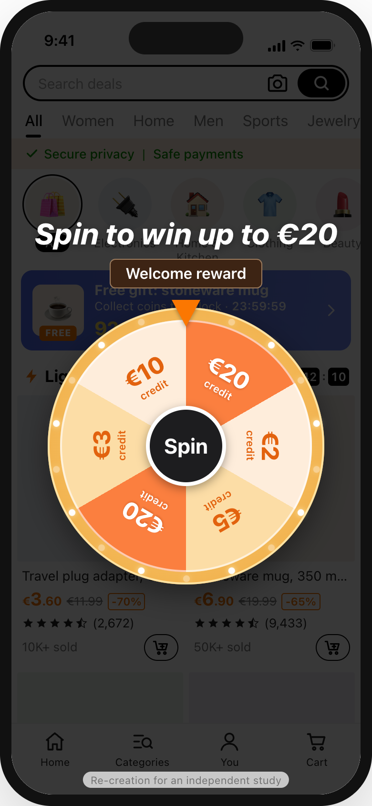
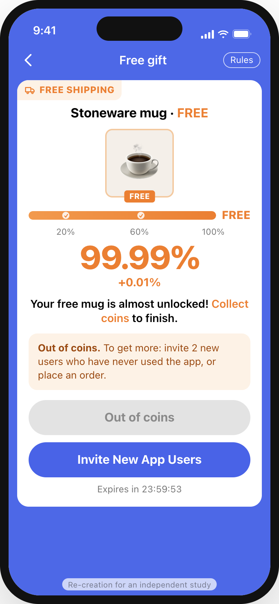
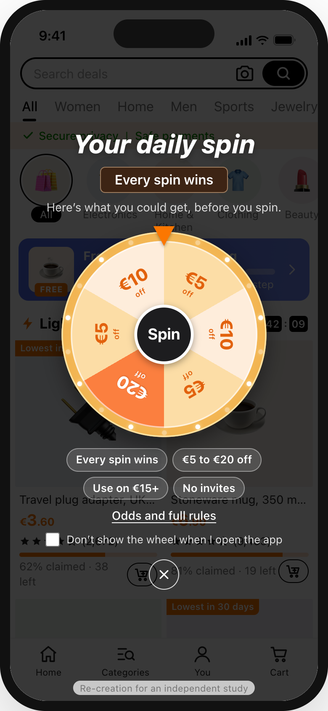
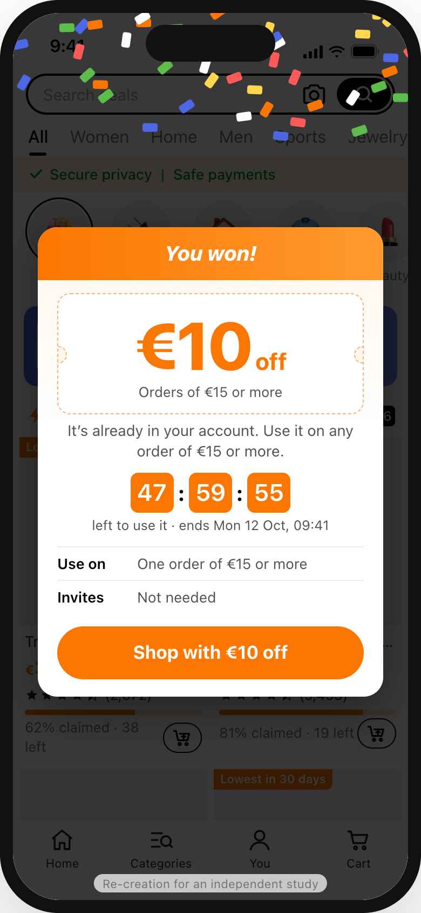
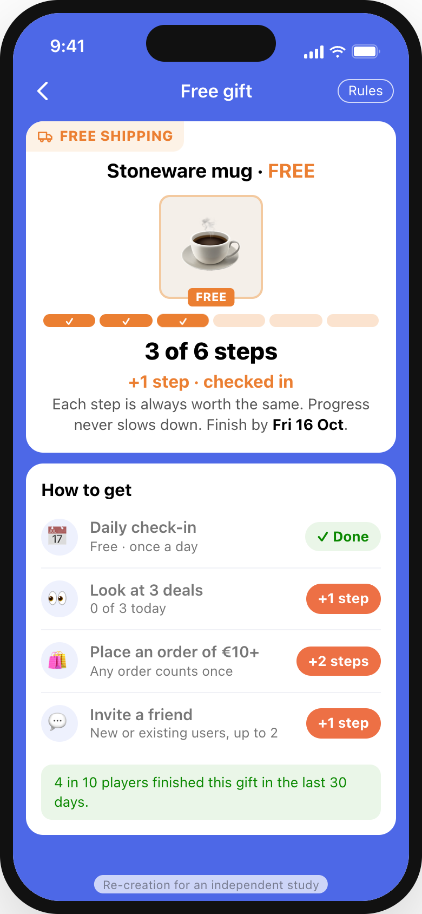
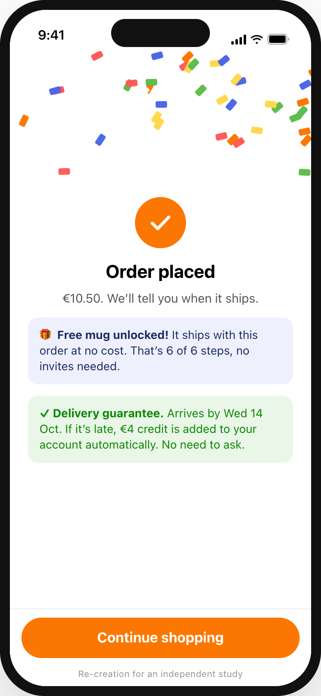

Temu’s games do real work: a reason to open the app daily, cheap growth through referrals, and browsing that turns into buying. In 450 App Store reviews, players enjoy them. The anger is about the rules: in the 111 reviews about the games, 17 say progress crawls near the end and 14 say “free” turned into spend. This keeps the spin, the celebration and the countdowns, and makes the rules visible, fixed and true.
Independent study by Mitul Vaghasiya, not affiliated with Temu. Every screen below is my re-creation in Temu’s visual style, based on its App Store screenshots (10 Oct 2026) and the public images listed in references/. They are not screenshots of the real app.
Re-created in the real app’s style. Where no public image of a state exists, it follows reviews and help pages, as noted in the case study.

1The wheel opens first and says nothing about what the prize will require. There’s no way to skip it or switch it off.
User control and freedom
2+2.6%, +1.9% … +0.01%, until 99.99% and “invite 2 new users”. A simplified test control built from reviews, not a screenshot.
Goal-gradient used against the userThe same moment, in 4 screens.

1It still opens, lights up and spins. The chips say every spin wins, €5 to €20, use on €15+, no invites. Skip and “don’t show on open” are there.
Informed choice
2Confetti and a big “€10 off”. The 48-hour countdown is real, from the server, and the credit is already in the account.
Honest urgency
3Six steps, each worth the same: check in, look at deals, order, invite any friend. It shows the finish date and last month’s finish rate.
Goal-gradient, used fairly
4The order adds its 2 steps and unlocks the mug. The late-delivery credit, the most-praised reward in the reviews, is promised up front.
Fairness and trustDoes B stay as fun as A while feeling fairer? If 3 of 5 testers find it clearly less exciting, or stop the gift game once they see the real cost, the reward itself needs rethinking.